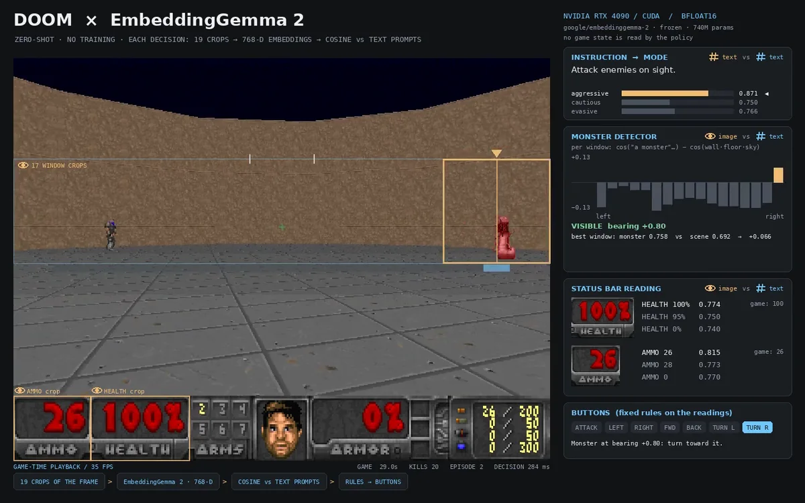
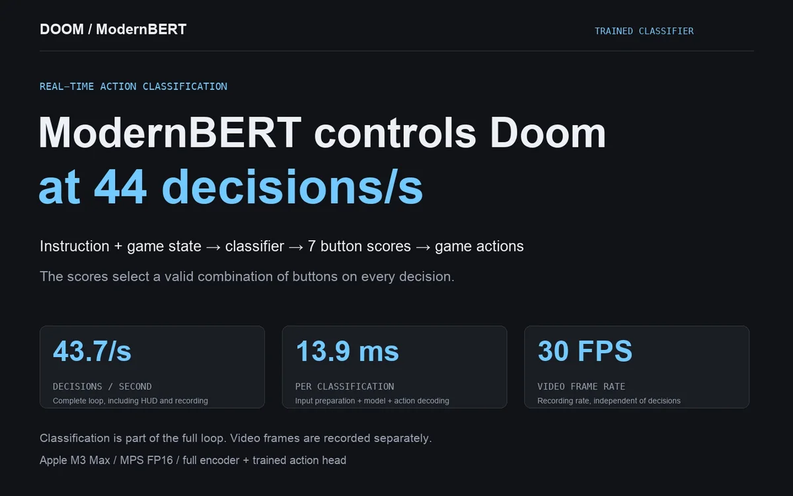
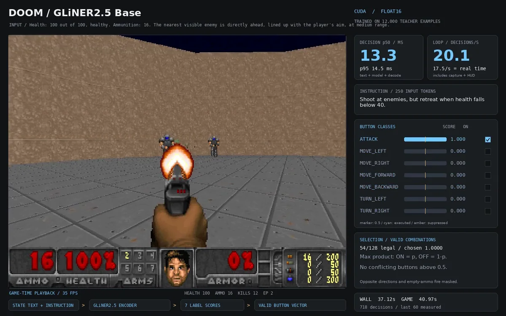

Zero-shot · EmbeddingGemma 2 · RTX 4090
EmbeddingGemma 2, zero-shot from pixels
Screen crops and cosine similarity to text prompts, no training: 37 kills and 2 deaths attacking, no deaths evading, with every reading on screen.
Read the journal →

Trained head · ModernBERT · Apple Metal
ModernBERT policy
A frozen ModernBERT reads an instruction and the game state as text; a head trained in 3.6 s makes it attack or evade, at about 44 decisions per second.
Read the journal →

Fine-tuned · GLiNER2.5 · RTX 4090
GLiNER2.5, zero-shot then fine-tuned
Zero-shot it fell short; fine-tuned on 12,000 teacher-labelled examples in four minutes, it matches the teacher on every held-out test, with every score on screen.
Read the journal →